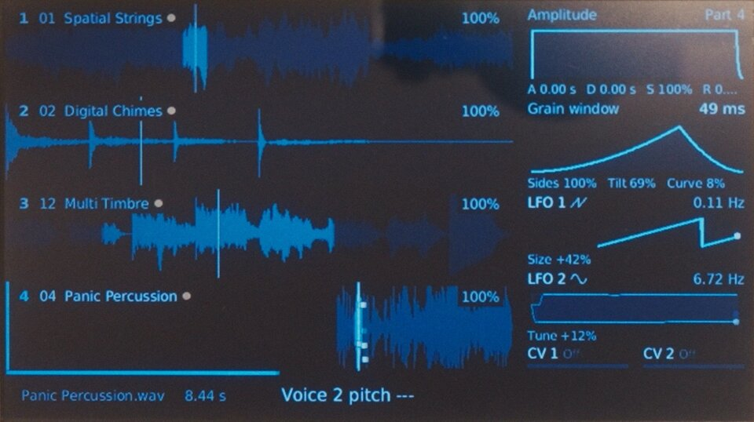
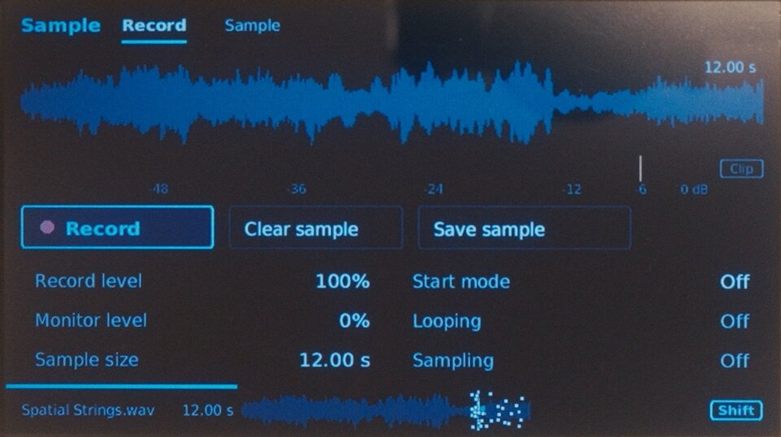
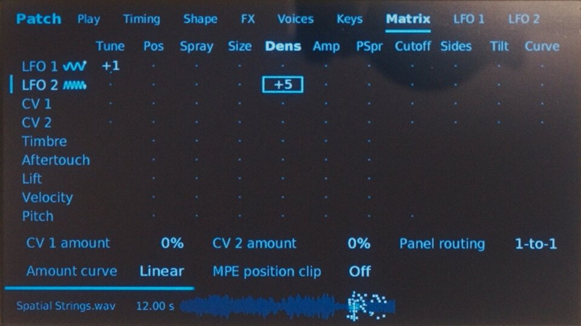
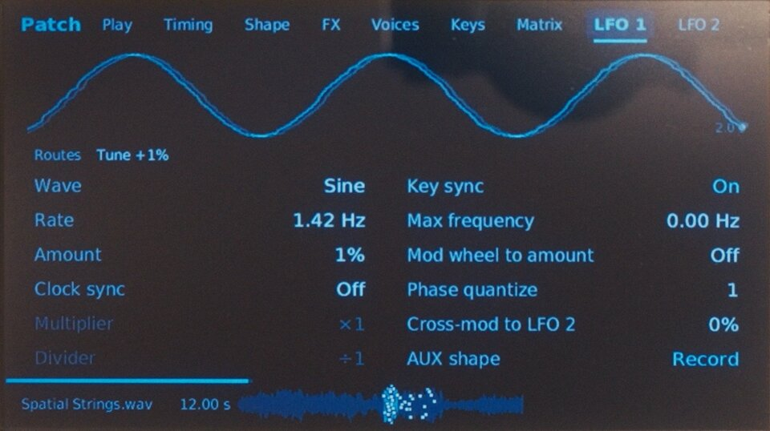
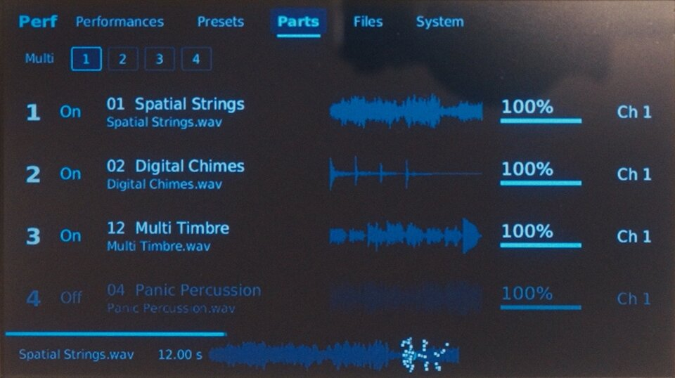
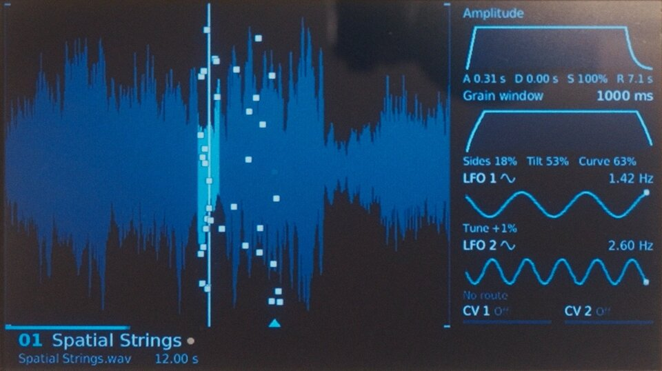

GR-1 UI
Redesigned UI for the Tasty Chips GR-1
New in 0.1.1: immediate LFO destination feedback, large shape previews, and clearer Amount, Frequency and window-control readouts. Release notes.
- Waveform and grains in view
- Light and Dark appearance
- Install with a USB stick












For GR-1 units with a Raspberry Pi 3 Model B Plus and official firmware 3.4.4.
Start with official firmware 3.4.4
Back up your sounds. Update to official firmware 3.4.4 if needed, and keep the downloaded file.
Download official firmware 3.4.4 · Official update instructions
Prepare your USB update
Choose the firmware file, then click Prepare USB update.
Download USB updateThe finished file contains Tasty Chips firmware. Keep it for your own use.
Copy, plug in, update
- Copy the prepared .tgz file to your USB stick, outside any folder. Keep only one firmware update file on the stick. Do not unpack it.
- Insert the stick into your GR-1 and restart it. Press Select when the update prompt appears.
- Let the update finish. Remove the stick and restart to use the new interface.
If no update prompt appears, unplug Ethernet and choose Shift + Perf → System → Firmware upgrade. You can reconnect Ethernet after the update.
Keep the GR-1 powered on while it updates.
Return to the original interface
Save this small file to a USB stick, outside any folder. Insert the stick and restart the GR-1 to open the original interface. Remove the file or stick to return to the new interface.
Prepared file
- SHA256